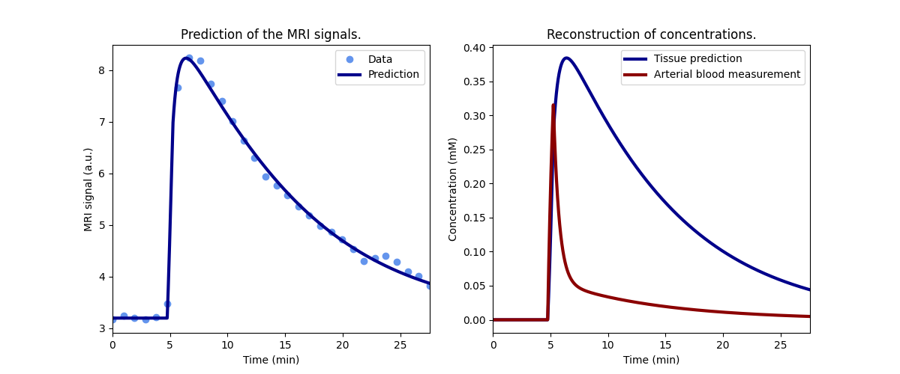
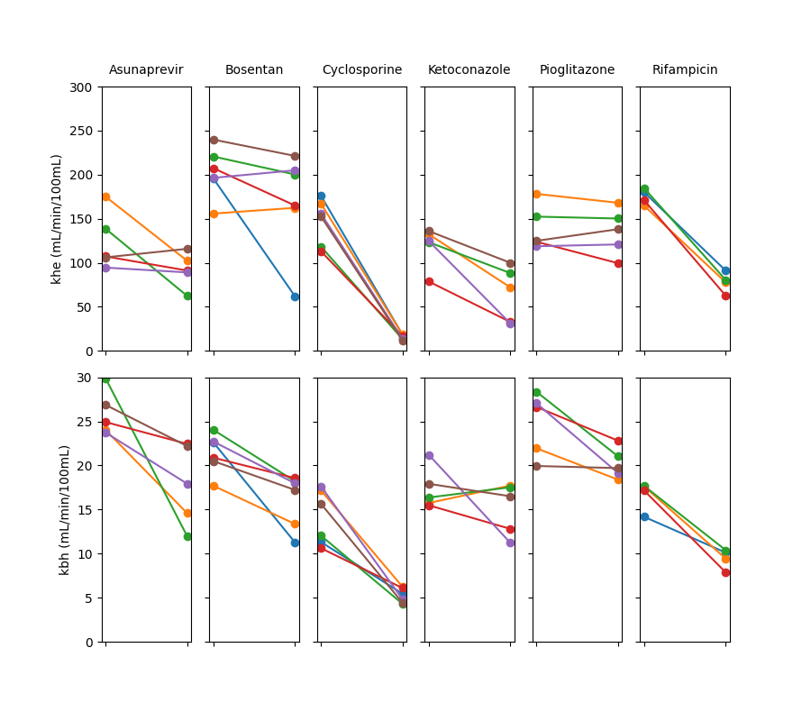
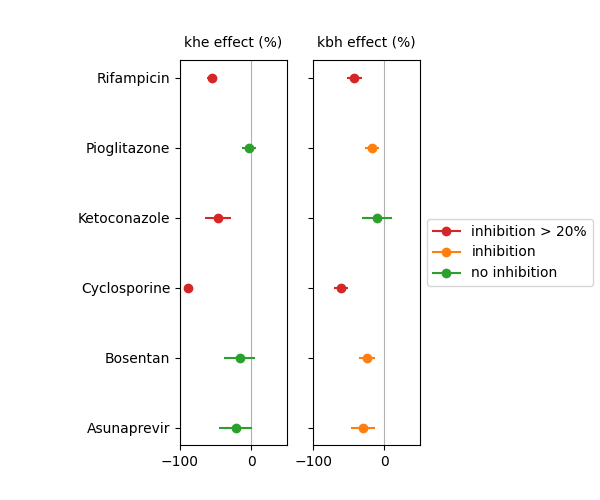

Note
Go to the end to download the full example code.
Preclinical - effect on liver function of 6 test drugs#
This example illustrates the use of Liver for fitting of signals
measured in liver. The use case is provided by the liver work package of the
TRISTAN project which develops imaging
biomarkers for drug safety assessment. The data and analysis were first
published in Melillo et al (2023).
The specific objective of the study was to determine the effect of selected drugs on hepatocellular uptake and excretion of the liver-specific contrast agent gadoxetate. If a drug inhibits uptake into liver cells, then it might cause other drugs to circulate in the blood stream for longer than expected, potentially causing harm to other organs. Alternatively, if a drug inhibits excretion from the liver, then it might cause other drugs to pool in liver cells for much longer than expected, potentially causing liver injury. These so-called drug-drug interactions (DDI’s) pose a significant risk to patients and trial participants. A direct in-vivo measurement of drug effects on liver uptake and excretion can potentially help improve predictions of DDI’s and inform dose setting strategies to reduce the risk.
The study presented here measured gadoxetate uptake and excretion in healthy rats before and after injection of 6 test drugs. Studies were performed in preclinical MRI scanners at 3 different centers and 2 different field strengths. Results demonstrated that two of the tested drugs (rifampicin and cyclosporine) showed strong inhibition of both uptake and excretion. One drug (ketoconazole) inhibited uptake but not excretion. Three drugs (pioglitazone, bosentan and asunaprevir) inhibited excretion but not uptake.
Reference
Melillo N, Scotcher D, Kenna JG, Green C, Hines CDG, Laitinen I, Hockings PD, Ogungbenro K, Gunwhy ER, Sourbron S, et al. Use of In Vivo Imaging and Physiologically-Based Kinetic Modelling to Predict Hepatic Transporter Mediated Drug–Drug Interactions in Rats. Pharmaceutics. 2023; 15(3):896. [DOI]
Setup#
# Import packages
import pandas as pd
import numpy as np
import matplotlib.pyplot as plt
import dcmri as dc
# Fetch the data
data = dc.fetch('tristan6drugs')
Model definition#
In order to avoid some repetition in this script, we define a function that returns a trained model for a single dataset.
The model uses a standardized, population-average input function and fits for only 2 parameters, fixing all other free parameters to typical values for this rat model:
def tristan_rat(data, **kwargs):
# High-resolution time points for prediction
t = np.arange(0, np.amax(data['time'])+0.5, 0.5)
# Standard input function
ca = dc.aif_tristan_rat(t, BAT=data['BAT'], duration=data['duration'])
# Liver model with population input function
model = dc.Liver(
# Input parameters
t = t,
ca = ca,
# Acquisition parameters
field_strength = data['field_strength'],
agent = 'gadoxetate',
TR = data['TR'],
FA = data['FA'],
n0 = data['n0'],
# Kinetic parameters
kinetics = '1I-IC-HF',
H = 0.418,
ve = 0.23,
free = {
'khe': [0, np.inf],
'Th': [0, np.inf],
},
# Tissue parameters
R10 = 1/dc.T1(data['field_strength'], 'liver'),
)
return model.train(data['time'], data['liver'], **kwargs)
Check model fit#
Before running the full analysis on all cases, lets illustrate the results by fitting the baseline visit for the first subject. We use maximum verbosity to get some feedback about the iterations:
model = tristan_rat(data[0], xtol=1e-3, verbose=2)
Iteration Total nfev Cost Cost reduction Step norm Optimality
0 1 4.0626e+01 8.81e+03
1 3 2.4807e+01 1.58e+01 4.50e+02 1.52e+03
2 5 2.0845e+01 3.96e+00 3.37e+02 9.12e+02
3 6 1.3832e+01 7.01e+00 5.84e+02 2.96e+03
4 7 5.7140e+00 8.12e+00 3.67e+01 3.14e+02
5 8 3.7094e+00 2.00e+00 1.86e+02 1.14e+03
6 9 2.3659e-01 3.47e+00 1.61e+01 1.08e+02
7 10 1.9487e-01 4.17e-02 3.04e+00 1.85e-02
8 11 1.9487e-01 3.25e-06 1.01e-01 8.95e-04
`xtol` termination condition is satisfied.
Function evaluations 11, initial cost 4.0626e+01, final cost 1.9487e-01, first-order optimality 8.95e-04.
Plot the results to check that the model has fitted the data:

Print the measured model parameters and any derived parameters and check that standard deviations of measured parameters are small relative to the value, indicating that the parameters are measured reliably:
model.print_params(round_to=3)
--------------------------------
Free parameters with their stdev
--------------------------------
Hepatocellular uptake rate (khe): 0.029 (0.001) mL/sec/cm3
Hepatocellular mean transit time (Th): 192.246 (4.837) sec
----------------------------
Fixed and derived parameters
----------------------------
Hematocrit (H): 0.418
Liver extracellular volume fraction (ve): 0.23 mL/cm3
Biliary tissue excretion rate (Kbh): 0.005 mL/sec/cm3
Hepatocellular tissue uptake rate (Khe): 0.127 mL/sec/cm3
Biliary excretion rate (kbh): 0.004 mL/sec/cm3
Fit all data#
Now that we have illustrated an individual result in some detail, we proceed with fitting all the data. Results are stored in a dataframe in long format:
results = []
# Loop over all datasets
for scan in data:
# Generate a trained model for scan i:
model = tristan_rat(scan, xtol=1e-3)
# Save fitted parameters as a dataframe.
pars = model.export_params()
pars = pd.DataFrame.from_dict(pars,
orient = 'index',
columns = ["name", "value", "unit", 'stdev'])
pars['parameter'] = pars.index
pars['study'] = scan['study']
pars['visit'] = scan['visit']
pars['subject'] = scan['subject']
# Add the dataframe to the list of results
results.append(pars)
# Combine all results into a single dataframe.
results = pd.concat(results).reset_index(drop=True)
# Print all results
print(results.to_string())
name value unit stdev parameter study visit subject
0 Hematocrit 0.418000 0.000000 H 5 1 2
1 Liver extracellular volume fraction 0.230000 mL/cm3 0.000000 ve 5 1 2
2 Hepatocellular uptake rate 0.029190 mL/sec/cm3 0.000690 khe 5 1 2
3 Hepatocellular mean transit time 192.246433 sec 4.836834 Th 5 1 2
4 Biliary tissue excretion rate 0.005202 mL/sec/cm3 0.000000 Kbh 5 1 2
5 Hepatocellular tissue uptake rate 0.126911 mL/sec/cm3 0.000000 Khe 5 1 2
6 Biliary excretion rate 0.004005 mL/sec/cm3 0.000000 kbh 5 1 2
7 Hematocrit 0.418000 0.000000 H 5 2 2
8 Liver extracellular volume fraction 0.230000 mL/cm3 0.000000 ve 5 2 2
9 Hepatocellular uptake rate 0.017053 mL/sec/cm3 0.000899 khe 5 2 2
10 Hepatocellular mean transit time 316.554650 sec 19.042915 Th 5 2 2
11 Biliary tissue excretion rate 0.003159 mL/sec/cm3 0.000000 Kbh 5 2 2
12 Hepatocellular tissue uptake rate 0.074145 mL/sec/cm3 0.000000 Khe 5 2 2
13 Biliary excretion rate 0.002432 mL/sec/cm3 0.000000 kbh 5 2 2
14 Hematocrit 0.418000 0.000000 H 5 1 3
15 Liver extracellular volume fraction 0.230000 mL/cm3 0.000000 ve 5 1 3
16 Hepatocellular uptake rate 0.023123 mL/sec/cm3 0.002281 khe 5 1 3
17 Hepatocellular mean transit time 154.454455 sec 16.290498 Th 5 1 3
18 Biliary tissue excretion rate 0.006474 mL/sec/cm3 0.000000 Kbh 5 1 3
19 Hepatocellular tissue uptake rate 0.100536 mL/sec/cm3 0.000000 Khe 5 1 3
20 Biliary excretion rate 0.004985 mL/sec/cm3 0.000000 kbh 5 1 3
21 Hematocrit 0.418000 0.000000 H 5 2 3
22 Liver extracellular volume fraction 0.230000 mL/cm3 0.000000 ve 5 2 3
23 Hepatocellular uptake rate 0.010411 mL/sec/cm3 0.000681 khe 5 2 3
24 Hepatocellular mean transit time 385.263252 sec 30.439907 Th 5 2 3
25 Biliary tissue excretion rate 0.002596 mL/sec/cm3 0.000000 Kbh 5 2 3
26 Hepatocellular tissue uptake rate 0.045265 mL/sec/cm3 0.000000 Khe 5 2 3
27 Biliary excretion rate 0.001999 mL/sec/cm3 0.000000 kbh 5 2 3
28 Hematocrit 0.418000 0.000000 H 5 1 4
29 Liver extracellular volume fraction 0.230000 mL/cm3 0.000000 ve 5 1 4
30 Hepatocellular uptake rate 0.017874 mL/sec/cm3 0.000788 khe 5 1 4
31 Hepatocellular mean transit time 185.344175 sec 8.871480 Th 5 1 4
32 Biliary tissue excretion rate 0.005395 mL/sec/cm3 0.000000 Kbh 5 1 4
33 Hepatocellular tissue uptake rate 0.077715 mL/sec/cm3 0.000000 Khe 5 1 4
34 Biliary excretion rate 0.004154 mL/sec/cm3 0.000000 kbh 5 1 4
35 Hematocrit 0.418000 0.000000 H 5 2 4
36 Liver extracellular volume fraction 0.230000 mL/cm3 0.000000 ve 5 2 4
37 Hepatocellular uptake rate 0.015201 mL/sec/cm3 0.000948 khe 5 2 4
38 Hepatocellular mean transit time 205.798967 sec 14.080670 Th 5 2 4
39 Biliary tissue excretion rate 0.004859 mL/sec/cm3 0.000000 Kbh 5 2 4
40 Hepatocellular tissue uptake rate 0.066089 mL/sec/cm3 0.000000 Khe 5 2 4
41 Biliary excretion rate 0.003742 mL/sec/cm3 0.000000 kbh 5 2 4
42 Hematocrit 0.418000 0.000000 H 5 1 5
43 Liver extracellular volume fraction 0.230000 mL/cm3 0.000000 ve 5 1 5
44 Hepatocellular uptake rate 0.015750 mL/sec/cm3 0.001193 khe 5 1 5
45 Hepatocellular mean transit time 194.627433 sec 16.106847 Th 5 1 5
46 Biliary tissue excretion rate 0.005138 mL/sec/cm3 0.000000 Kbh 5 1 5
47 Hepatocellular tissue uptake rate 0.068477 mL/sec/cm3 0.000000 Khe 5 1 5
48 Biliary excretion rate 0.003956 mL/sec/cm3 0.000000 kbh 5 1 5
49 Hematocrit 0.418000 0.000000 H 5 2 5
50 Liver extracellular volume fraction 0.230000 mL/cm3 0.000000 ve 5 2 5
51 Hepatocellular uptake rate 0.014848 mL/sec/cm3 0.000687 khe 5 2 5
52 Hepatocellular mean transit time 257.645715 sec 13.315206 Th 5 2 5
53 Biliary tissue excretion rate 0.003881 mL/sec/cm3 0.000000 Kbh 5 2 5
54 Hepatocellular tissue uptake rate 0.064556 mL/sec/cm3 0.000000 Khe 5 2 5
55 Biliary excretion rate 0.002989 mL/sec/cm3 0.000000 kbh 5 2 5
56 Hematocrit 0.418000 0.000000 H 5 1 6
57 Liver extracellular volume fraction 0.230000 mL/cm3 0.000000 ve 5 1 6
58 Hepatocellular uptake rate 0.017684 mL/sec/cm3 0.001342 khe 5 1 6
59 Hepatocellular mean transit time 171.878130 sec 14.125022 Th 5 1 6
60 Biliary tissue excretion rate 0.005818 mL/sec/cm3 0.000000 Kbh 5 1 6
61 Hepatocellular tissue uptake rate 0.076888 mL/sec/cm3 0.000000 Khe 5 1 6
62 Biliary excretion rate 0.004480 mL/sec/cm3 0.000000 kbh 5 1 6
63 Hematocrit 0.418000 0.000000 H 5 2 6
64 Liver extracellular volume fraction 0.230000 mL/cm3 0.000000 ve 5 2 6
65 Hepatocellular uptake rate 0.019304 mL/sec/cm3 0.001365 khe 5 2 6
66 Hepatocellular mean transit time 208.105645 sec 16.012430 Th 5 2 6
67 Biliary tissue excretion rate 0.004805 mL/sec/cm3 0.000000 Kbh 5 2 6
68 Hepatocellular tissue uptake rate 0.083928 mL/sec/cm3 0.000000 Khe 5 2 6
69 Biliary excretion rate 0.003700 mL/sec/cm3 0.000000 kbh 5 2 6
70 Hematocrit 0.418000 0.000000 H 10 1 1
71 Liver extracellular volume fraction 0.230000 mL/cm3 0.000000 ve 10 1 1
72 Hepatocellular uptake rate 0.032653 mL/sec/cm3 0.002459 khe 10 1 1
73 Hepatocellular mean transit time 204.095965 sec 16.306195 Th 10 1 1
74 Biliary tissue excretion rate 0.004900 mL/sec/cm3 0.000000 Kbh 10 1 1
75 Hepatocellular tissue uptake rate 0.141969 mL/sec/cm3 0.000000 Khe 10 1 1
76 Biliary excretion rate 0.003773 mL/sec/cm3 0.000000 kbh 10 1 1
77 Hematocrit 0.418000 0.000000 H 10 2 1
78 Liver extracellular volume fraction 0.230000 mL/cm3 0.000000 ve 10 2 1
79 Hepatocellular uptake rate 0.010368 mL/sec/cm3 0.000343 khe 10 2 1
80 Hepatocellular mean transit time 409.183856 sec 16.626224 Th 10 2 1
81 Biliary tissue excretion rate 0.002444 mL/sec/cm3 0.000000 Kbh 10 2 1
82 Hepatocellular tissue uptake rate 0.045078 mL/sec/cm3 0.000000 Khe 10 2 1
83 Biliary excretion rate 0.001882 mL/sec/cm3 0.000000 kbh 10 2 1
84 Hematocrit 0.418000 0.000000 H 10 1 2
85 Liver extracellular volume fraction 0.230000 mL/cm3 0.000000 ve 10 1 2
86 Hepatocellular uptake rate 0.025971 mL/sec/cm3 0.001777 khe 10 1 2
87 Hepatocellular mean transit time 260.964310 sec 19.500936 Th 10 1 2
88 Biliary tissue excretion rate 0.003832 mL/sec/cm3 0.000000 Kbh 10 1 2
89 Hepatocellular tissue uptake rate 0.112917 mL/sec/cm3 0.000000 Khe 10 1 2
90 Biliary excretion rate 0.002951 mL/sec/cm3 0.000000 kbh 10 1 2
91 Hematocrit 0.418000 0.000000 H 10 2 2
92 Liver extracellular volume fraction 0.230000 mL/cm3 0.000000 ve 10 2 2
93 Hepatocellular uptake rate 0.027056 mL/sec/cm3 0.001882 khe 10 2 2
94 Hepatocellular mean transit time 345.740734 sec 27.331373 Th 10 2 2
95 Biliary tissue excretion rate 0.002892 mL/sec/cm3 0.000000 Kbh 10 2 2
96 Hepatocellular tissue uptake rate 0.117634 mL/sec/cm3 0.000000 Khe 10 2 2
97 Biliary excretion rate 0.002227 mL/sec/cm3 0.000000 kbh 10 2 2
98 Hematocrit 0.418000 0.000000 H 10 1 3
99 Liver extracellular volume fraction 0.230000 mL/cm3 0.000000 ve 10 1 3
100 Hepatocellular uptake rate 0.036772 mL/sec/cm3 0.002993 khe 10 1 3
101 Hepatocellular mean transit time 192.094645 sec 16.432004 Th 10 1 3
102 Biliary tissue excretion rate 0.005206 mL/sec/cm3 0.000000 Kbh 10 1 3
103 Hepatocellular tissue uptake rate 0.159880 mL/sec/cm3 0.000000 Khe 10 1 3
104 Biliary excretion rate 0.004008 mL/sec/cm3 0.000000 kbh 10 1 3
105 Hematocrit 0.418000 0.000000 H 10 2 3
106 Liver extracellular volume fraction 0.230000 mL/cm3 0.000000 ve 10 2 3
107 Hepatocellular uptake rate 0.033378 mL/sec/cm3 0.001953 khe 10 2 3
108 Hepatocellular mean transit time 253.681764 sec 15.936704 Th 10 2 3
109 Biliary tissue excretion rate 0.003942 mL/sec/cm3 0.000000 Kbh 10 2 3
110 Hepatocellular tissue uptake rate 0.145124 mL/sec/cm3 0.000000 Khe 10 2 3
111 Biliary excretion rate 0.003035 mL/sec/cm3 0.000000 kbh 10 2 3
112 Hematocrit 0.418000 0.000000 H 10 1 4
113 Liver extracellular volume fraction 0.230000 mL/cm3 0.000000 ve 10 1 4
114 Hepatocellular uptake rate 0.034563 mL/sec/cm3 0.003415 khe 10 1 4
115 Hepatocellular mean transit time 221.220680 sec 23.197005 Th 10 1 4
116 Biliary tissue excretion rate 0.004520 mL/sec/cm3 0.000000 Kbh 10 1 4
117 Hepatocellular tissue uptake rate 0.150275 mL/sec/cm3 0.000000 Khe 10 1 4
118 Biliary excretion rate 0.003481 mL/sec/cm3 0.000000 kbh 10 1 4
119 Hematocrit 0.418000 0.000000 H 10 2 4
120 Liver extracellular volume fraction 0.230000 mL/cm3 0.000000 ve 10 2 4
121 Hepatocellular uptake rate 0.027510 mL/sec/cm3 0.001591 khe 10 2 4
122 Hepatocellular mean transit time 248.825391 sec 15.598687 Th 10 2 4
123 Biliary tissue excretion rate 0.004019 mL/sec/cm3 0.000000 Kbh 10 2 4
124 Hepatocellular tissue uptake rate 0.119610 mL/sec/cm3 0.000000 Khe 10 2 4
125 Biliary excretion rate 0.003095 mL/sec/cm3 0.000000 kbh 10 2 4
126 Hematocrit 0.418000 0.000000 H 10 1 5
127 Liver extracellular volume fraction 0.230000 mL/cm3 0.000000 ve 10 1 5
128 Hepatocellular uptake rate 0.032724 mL/sec/cm3 0.002464 khe 10 1 5
129 Hepatocellular mean transit time 203.321189 sec 16.233566 Th 10 1 5
130 Biliary tissue excretion rate 0.004918 mL/sec/cm3 0.000000 Kbh 10 1 5
131 Hepatocellular tissue uptake rate 0.142280 mL/sec/cm3 0.000000 Khe 10 1 5
132 Biliary excretion rate 0.003787 mL/sec/cm3 0.000000 kbh 10 1 5
133 Hematocrit 0.418000 0.000000 H 10 2 5
134 Liver extracellular volume fraction 0.230000 mL/cm3 0.000000 ve 10 2 5
135 Hepatocellular uptake rate 0.034150 mL/sec/cm3 0.002115 khe 10 2 5
136 Hepatocellular mean transit time 256.904592 sec 17.077545 Th 10 2 5
137 Biliary tissue excretion rate 0.003892 mL/sec/cm3 0.000000 Kbh 10 2 5
138 Hepatocellular tissue uptake rate 0.148477 mL/sec/cm3 0.000000 Khe 10 2 5
139 Biliary excretion rate 0.002997 mL/sec/cm3 0.000000 kbh 10 2 5
140 Hematocrit 0.418000 0.000000 H 10 1 6
141 Liver extracellular volume fraction 0.230000 mL/cm3 0.000000 ve 10 1 6
142 Hepatocellular uptake rate 0.039966 mL/sec/cm3 0.002838 khe 10 1 6
143 Hepatocellular mean transit time 225.378400 sec 16.843082 Th 10 1 6
144 Biliary tissue excretion rate 0.004437 mL/sec/cm3 0.000000 Kbh 10 1 6
145 Hepatocellular tissue uptake rate 0.173767 mL/sec/cm3 0.000000 Khe 10 1 6
146 Biliary excretion rate 0.003416 mL/sec/cm3 0.000000 kbh 10 1 6
147 Hematocrit 0.418000 0.000000 H 10 2 6
148 Liver extracellular volume fraction 0.230000 mL/cm3 0.000000 ve 10 2 6
149 Hepatocellular uptake rate 0.036884 mL/sec/cm3 0.002698 khe 10 2 6
150 Hepatocellular mean transit time 268.185300 sec 21.041762 Th 10 2 6
151 Biliary tissue excretion rate 0.003729 mL/sec/cm3 0.000000 Kbh 10 2 6
152 Hepatocellular tissue uptake rate 0.160366 mL/sec/cm3 0.000000 Khe 10 2 6
153 Biliary excretion rate 0.002871 mL/sec/cm3 0.000000 kbh 10 2 6
154 Hematocrit 0.418000 0.000000 H 9 1 1
155 Liver extracellular volume fraction 0.230000 mL/cm3 0.000000 ve 9 1 1
156 Hepatocellular uptake rate 0.020030 mL/sec/cm3 0.000709 khe 9 1 1
157 Hepatocellular mean transit time 373.947283 sec 15.530816 Th 9 1 1
158 Biliary tissue excretion rate 0.002674 mL/sec/cm3 0.000000 Kbh 9 1 1
159 Hepatocellular tissue uptake rate 0.087087 mL/sec/cm3 0.000000 Khe 9 1 1
160 Biliary excretion rate 0.002059 mL/sec/cm3 0.000000 kbh 9 1 1
161 Hematocrit 0.418000 0.000000 H 9 2 1
162 Liver extracellular volume fraction 0.230000 mL/cm3 0.000000 ve 9 2 1
163 Hepatocellular uptake rate 0.019136 mL/sec/cm3 0.000890 khe 9 2 1
164 Hepatocellular mean transit time 331.575221 sec 17.678724 Th 9 2 1
165 Biliary tissue excretion rate 0.003016 mL/sec/cm3 0.000000 Kbh 9 2 1
166 Hepatocellular tissue uptake rate 0.083200 mL/sec/cm3 0.000000 Khe 9 2 1
167 Biliary excretion rate 0.002322 mL/sec/cm3 0.000000 kbh 9 2 1
168 Hematocrit 0.418000 0.000000 H 9 1 2
169 Liver extracellular volume fraction 0.230000 mL/cm3 0.000000 ve 9 1 2
170 Hepatocellular uptake rate 0.017119 mL/sec/cm3 0.001287 khe 9 1 2
171 Hepatocellular mean transit time 231.522778 sec 19.151147 Th 9 1 2
172 Biliary tissue excretion rate 0.004319 mL/sec/cm3 0.000000 Kbh 9 1 2
173 Hepatocellular tissue uptake rate 0.074433 mL/sec/cm3 0.000000 Khe 9 1 2
174 Biliary excretion rate 0.003326 mL/sec/cm3 0.000000 kbh 9 1 2
175 Hematocrit 0.418000 0.000000 H 9 2 2
176 Liver extracellular volume fraction 0.230000 mL/cm3 0.000000 ve 9 2 2
177 Hepatocellular uptake rate 0.022700 mL/sec/cm3 0.001491 khe 9 2 2
178 Hepatocellular mean transit time 326.272113 sec 24.293174 Th 9 2 2
179 Biliary tissue excretion rate 0.003065 mL/sec/cm3 0.000000 Kbh 9 2 2
180 Hepatocellular tissue uptake rate 0.098694 mL/sec/cm3 0.000000 Khe 9 2 2
181 Biliary excretion rate 0.002360 mL/sec/cm3 0.000000 kbh 9 2 2
182 Hematocrit 0.418000 0.000000 H 9 1 3
183 Liver extracellular volume fraction 0.230000 mL/cm3 0.000000 ve 9 1 3
184 Hepatocellular uptake rate 0.028307 mL/sec/cm3 0.002243 khe 9 1 3
185 Hepatocellular mean transit time 297.434220 sec 26.028315 Th 9 1 3
186 Biliary tissue excretion rate 0.003362 mL/sec/cm3 0.000000 Kbh 9 1 3
187 Hepatocellular tissue uptake rate 0.123073 mL/sec/cm3 0.000000 Khe 9 1 3
188 Biliary excretion rate 0.002589 mL/sec/cm3 0.000000 kbh 9 1 3
189 Hematocrit 0.418000 0.000000 H 9 2 3
190 Liver extracellular volume fraction 0.230000 mL/cm3 0.000000 ve 9 2 3
191 Hepatocellular uptake rate 0.025216 mL/sec/cm3 0.001579 khe 9 2 3
192 Hepatocellular mean transit time 327.688375 sec 23.156375 Th 9 2 3
193 Biliary tissue excretion rate 0.003052 mL/sec/cm3 0.000000 Kbh 9 2 3
194 Hepatocellular tissue uptake rate 0.109635 mL/sec/cm3 0.000000 Khe 9 2 3
195 Biliary excretion rate 0.002350 mL/sec/cm3 0.000000 kbh 9 2 3
196 Hematocrit 0.418000 0.000000 H 8 1 1
197 Liver extracellular volume fraction 0.230000 mL/cm3 0.000000 ve 8 1 1
198 Hepatocellular uptake rate 0.029344 mL/sec/cm3 0.001970 khe 8 1 1
199 Hepatocellular mean transit time 408.262045 sec 31.838820 Th 8 1 1
200 Biliary tissue excretion rate 0.002449 mL/sec/cm3 0.000000 Kbh 8 1 1
201 Hepatocellular tissue uptake rate 0.127585 mL/sec/cm3 0.000000 Khe 8 1 1
202 Biliary excretion rate 0.001886 mL/sec/cm3 0.000000 kbh 8 1 1
203 Hematocrit 0.418000 0.000000 H 8 2 1
204 Liver extracellular volume fraction 0.230000 mL/cm3 0.000000 ve 8 2 1
205 Hepatocellular uptake rate 0.003034 mL/sec/cm3 0.000466 khe 8 2 1
206 Hepatocellular mean transit time 850.042766 sec 227.108547 Th 8 2 1
207 Biliary tissue excretion rate 0.001176 mL/sec/cm3 0.000000 Kbh 8 2 1
208 Hepatocellular tissue uptake rate 0.013192 mL/sec/cm3 0.000000 Khe 8 2 1
209 Biliary excretion rate 0.000906 mL/sec/cm3 0.000000 kbh 8 2 1
210 Hematocrit 0.418000 0.000000 H 8 1 2
211 Liver extracellular volume fraction 0.230000 mL/cm3 0.000000 ve 8 1 2
212 Hepatocellular uptake rate 0.027849 mL/sec/cm3 0.002515 khe 8 1 2
213 Hepatocellular mean transit time 269.048876 sec 26.131604 Th 8 1 2
214 Biliary tissue excretion rate 0.003717 mL/sec/cm3 0.000000 Kbh 8 1 2
215 Hepatocellular tissue uptake rate 0.121082 mL/sec/cm3 0.000000 Khe 8 1 2
216 Biliary excretion rate 0.002862 mL/sec/cm3 0.000000 kbh 8 1 2
217 Hematocrit 0.418000 0.000000 H 8 2 2
218 Liver extracellular volume fraction 0.230000 mL/cm3 0.000000 ve 8 2 2
219 Hepatocellular uptake rate 0.003093 mL/sec/cm3 0.000567 khe 8 2 2
220 Hepatocellular mean transit time 742.109715 sec 218.143697 Th 8 2 2
221 Biliary tissue excretion rate 0.001348 mL/sec/cm3 0.000000 Kbh 8 2 2
222 Hepatocellular tissue uptake rate 0.013450 mL/sec/cm3 0.000000 Khe 8 2 2
223 Biliary excretion rate 0.001038 mL/sec/cm3 0.000000 kbh 8 2 2
224 Hematocrit 0.418000 0.000000 H 8 1 3
225 Liver extracellular volume fraction 0.230000 mL/cm3 0.000000 ve 8 1 3
226 Hepatocellular uptake rate 0.019728 mL/sec/cm3 0.001371 khe 8 1 3
227 Hepatocellular mean transit time 383.872404 sec 31.160715 Th 8 1 3
228 Biliary tissue excretion rate 0.002605 mL/sec/cm3 0.000000 Kbh 8 1 3
229 Hepatocellular tissue uptake rate 0.085774 mL/sec/cm3 0.000000 Khe 8 1 3
230 Biliary excretion rate 0.002006 mL/sec/cm3 0.000000 kbh 8 1 3
231 Hematocrit 0.418000 0.000000 H 8 2 3
232 Liver extracellular volume fraction 0.230000 mL/cm3 0.000000 ve 8 2 3
233 Hepatocellular uptake rate 0.002214 mL/sec/cm3 0.000386 khe 8 2 3
234 Hepatocellular mean transit time 1076.771454 sec 381.975331 Th 8 2 3
235 Biliary tissue excretion rate 0.000929 mL/sec/cm3 0.000000 Kbh 8 2 3
236 Hepatocellular tissue uptake rate 0.009627 mL/sec/cm3 0.000000 Khe 8 2 3
237 Biliary excretion rate 0.000715 mL/sec/cm3 0.000000 kbh 8 2 3
238 Hematocrit 0.418000 0.000000 H 8 1 4
239 Liver extracellular volume fraction 0.230000 mL/cm3 0.000000 ve 8 1 4
240 Hepatocellular uptake rate 0.018832 mL/sec/cm3 0.001177 khe 8 1 4
241 Hepatocellular mean transit time 435.387822 sec 33.054295 Th 8 1 4
242 Biliary tissue excretion rate 0.002297 mL/sec/cm3 0.000000 Kbh 8 1 4
243 Hepatocellular tissue uptake rate 0.081878 mL/sec/cm3 0.000000 Khe 8 1 4
244 Biliary excretion rate 0.001769 mL/sec/cm3 0.000000 kbh 8 1 4
245 Hematocrit 0.418000 0.000000 H 8 2 4
246 Liver extracellular volume fraction 0.230000 mL/cm3 0.000000 ve 8 2 4
247 Hepatocellular uptake rate 0.002796 mL/sec/cm3 0.000413 khe 8 2 4
248 Hepatocellular mean transit time 759.109378 sec 182.021469 Th 8 2 4
249 Biliary tissue excretion rate 0.001317 mL/sec/cm3 0.000000 Kbh 8 2 4
250 Hepatocellular tissue uptake rate 0.012158 mL/sec/cm3 0.000000 Khe 8 2 4
251 Biliary excretion rate 0.001014 mL/sec/cm3 0.000000 kbh 8 2 4
252 Hematocrit 0.418000 0.000000 H 8 1 5
253 Liver extracellular volume fraction 0.230000 mL/cm3 0.000000 ve 8 1 5
254 Hepatocellular uptake rate 0.025961 mL/sec/cm3 0.002111 khe 8 1 5
255 Hepatocellular mean transit time 262.092578 sec 22.959490 Th 8 1 5
256 Biliary tissue excretion rate 0.003815 mL/sec/cm3 0.000000 Kbh 8 1 5
257 Hepatocellular tissue uptake rate 0.112874 mL/sec/cm3 0.000000 Khe 8 1 5
258 Biliary excretion rate 0.002938 mL/sec/cm3 0.000000 kbh 8 1 5
259 Hematocrit 0.418000 0.000000 H 8 2 5
260 Liver extracellular volume fraction 0.230000 mL/cm3 0.000000 ve 8 2 5
261 Hepatocellular uptake rate 0.002245 mL/sec/cm3 0.000343 khe 8 2 5
262 Hepatocellular mean transit time 958.806102 sec 275.583681 Th 8 2 5
263 Biliary tissue excretion rate 0.001043 mL/sec/cm3 0.000000 Kbh 8 2 5
264 Hepatocellular tissue uptake rate 0.009760 mL/sec/cm3 0.000000 Khe 8 2 5
265 Biliary excretion rate 0.000803 mL/sec/cm3 0.000000 kbh 8 2 5
266 Hematocrit 0.418000 0.000000 H 8 1 6
267 Liver extracellular volume fraction 0.230000 mL/cm3 0.000000 ve 8 1 6
268 Hepatocellular uptake rate 0.025441 mL/sec/cm3 0.002053 khe 8 1 6
269 Hepatocellular mean transit time 295.237391 sec 26.068654 Th 8 1 6
270 Biliary tissue excretion rate 0.003387 mL/sec/cm3 0.000000 Kbh 8 1 6
271 Hepatocellular tissue uptake rate 0.110613 mL/sec/cm3 0.000000 Khe 8 1 6
272 Biliary excretion rate 0.002608 mL/sec/cm3 0.000000 kbh 8 1 6
273 Hematocrit 0.418000 0.000000 H 8 2 6
274 Liver extracellular volume fraction 0.230000 mL/cm3 0.000000 ve 8 2 6
275 Hepatocellular uptake rate 0.001989 mL/sec/cm3 0.000369 khe 8 2 6
276 Hepatocellular mean transit time 1046.481399 sec 387.308456 Th 8 2 6
277 Biliary tissue excretion rate 0.000956 mL/sec/cm3 0.000000 Kbh 8 2 6
278 Hepatocellular tissue uptake rate 0.008648 mL/sec/cm3 0.000000 Khe 8 2 6
279 Biliary excretion rate 0.000736 mL/sec/cm3 0.000000 kbh 8 2 6
280 Hematocrit 0.418000 0.000000 H 7 1 2
281 Liver extracellular volume fraction 0.230000 mL/cm3 0.000000 ve 7 1 2
282 Hepatocellular uptake rate 0.022070 mL/sec/cm3 0.002018 khe 7 1 2
283 Hepatocellular mean transit time 293.503375 sec 29.624750 Th 7 1 2
284 Biliary tissue excretion rate 0.003407 mL/sec/cm3 0.000000 Kbh 7 1 2
285 Hepatocellular tissue uptake rate 0.095958 mL/sec/cm3 0.000000 Khe 7 1 2
286 Biliary excretion rate 0.002623 mL/sec/cm3 0.000000 kbh 7 1 2
287 Hematocrit 0.418000 0.000000 H 7 2 2
288 Liver extracellular volume fraction 0.230000 mL/cm3 0.000000 ve 7 2 2
289 Hepatocellular uptake rate 0.012012 mL/sec/cm3 0.001000 khe 7 2 2
290 Hepatocellular mean transit time 260.758709 sec 24.245170 Th 7 2 2
291 Biliary tissue excretion rate 0.003835 mL/sec/cm3 0.000000 Kbh 7 2 2
292 Hepatocellular tissue uptake rate 0.052225 mL/sec/cm3 0.000000 Khe 7 2 2
293 Biliary excretion rate 0.002953 mL/sec/cm3 0.000000 kbh 7 2 2
294 Hematocrit 0.418000 0.000000 H 7 1 3
295 Liver extracellular volume fraction 0.230000 mL/cm3 0.000000 ve 7 1 3
296 Hepatocellular uptake rate 0.020564 mL/sec/cm3 0.002026 khe 7 1 3
297 Hepatocellular mean transit time 282.354635 sec 30.659355 Th 7 1 3
298 Biliary tissue excretion rate 0.003542 mL/sec/cm3 0.000000 Kbh 7 1 3
299 Hepatocellular tissue uptake rate 0.089409 mL/sec/cm3 0.000000 Khe 7 1 3
300 Biliary excretion rate 0.002727 mL/sec/cm3 0.000000 kbh 7 1 3
301 Hematocrit 0.418000 0.000000 H 7 2 3
302 Liver extracellular volume fraction 0.230000 mL/cm3 0.000000 ve 7 2 3
303 Hepatocellular uptake rate 0.014715 mL/sec/cm3 0.001503 khe 7 2 3
304 Hepatocellular mean transit time 263.644766 sec 29.904439 Th 7 2 3
305 Biliary tissue excretion rate 0.003793 mL/sec/cm3 0.000000 Kbh 7 2 3
306 Hepatocellular tissue uptake rate 0.063980 mL/sec/cm3 0.000000 Khe 7 2 3
307 Biliary excretion rate 0.002921 mL/sec/cm3 0.000000 kbh 7 2 3
308 Hematocrit 0.418000 0.000000 H 7 1 4
309 Liver extracellular volume fraction 0.230000 mL/cm3 0.000000 ve 7 1 4
310 Hepatocellular uptake rate 0.013127 mL/sec/cm3 0.000953 khe 7 1 4
311 Hepatocellular mean transit time 298.416370 sec 24.534799 Th 7 1 4
312 Biliary tissue excretion rate 0.003351 mL/sec/cm3 0.000000 Kbh 7 1 4
313 Hepatocellular tissue uptake rate 0.057074 mL/sec/cm3 0.000000 Khe 7 1 4
314 Biliary excretion rate 0.002580 mL/sec/cm3 0.000000 kbh 7 1 4
315 Hematocrit 0.418000 0.000000 H 7 2 4
316 Liver extracellular volume fraction 0.230000 mL/cm3 0.000000 ve 7 2 4
317 Hepatocellular uptake rate 0.005471 mL/sec/cm3 0.000503 khe 7 2 4
318 Hepatocellular mean transit time 360.852747 sec 39.769304 Th 7 2 4
319 Biliary tissue excretion rate 0.002771 mL/sec/cm3 0.000000 Kbh 7 2 4
320 Hepatocellular tissue uptake rate 0.023788 mL/sec/cm3 0.000000 Khe 7 2 4
321 Biliary excretion rate 0.002134 mL/sec/cm3 0.000000 kbh 7 2 4
322 Hematocrit 0.418000 0.000000 H 7 1 5
323 Liver extracellular volume fraction 0.230000 mL/cm3 0.000000 ve 7 1 5
324 Hepatocellular uptake rate 0.020795 mL/sec/cm3 0.002349 khe 7 1 5
325 Hepatocellular mean transit time 217.745080 sec 26.492837 Th 7 1 5
326 Biliary tissue excretion rate 0.004593 mL/sec/cm3 0.000000 Kbh 7 1 5
327 Hepatocellular tissue uptake rate 0.090411 mL/sec/cm3 0.000000 Khe 7 1 5
328 Biliary excretion rate 0.003536 mL/sec/cm3 0.000000 kbh 7 1 5
329 Hematocrit 0.418000 0.000000 H 7 2 5
330 Liver extracellular volume fraction 0.230000 mL/cm3 0.000000 ve 7 2 5
331 Hepatocellular uptake rate 0.005198 mL/sec/cm3 0.000558 khe 7 2 5
332 Hepatocellular mean transit time 411.657352 sec 54.774945 Th 7 2 5
333 Biliary tissue excretion rate 0.002429 mL/sec/cm3 0.000000 Kbh 7 2 5
334 Hepatocellular tissue uptake rate 0.022600 mL/sec/cm3 0.000000 Khe 7 2 5
335 Biliary excretion rate 0.001870 mL/sec/cm3 0.000000 kbh 7 2 5
336 Hematocrit 0.418000 0.000000 H 7 1 6
337 Liver extracellular volume fraction 0.230000 mL/cm3 0.000000 ve 7 1 6
338 Hepatocellular uptake rate 0.022667 mL/sec/cm3 0.002503 khe 7 1 6
339 Hepatocellular mean transit time 257.860271 sec 30.914503 Th 7 1 6
340 Biliary tissue excretion rate 0.003878 mL/sec/cm3 0.000000 Kbh 7 1 6
341 Hepatocellular tissue uptake rate 0.098553 mL/sec/cm3 0.000000 Khe 7 1 6
342 Biliary excretion rate 0.002986 mL/sec/cm3 0.000000 kbh 7 1 6
343 Hematocrit 0.418000 0.000000 H 7 2 6
344 Liver extracellular volume fraction 0.230000 mL/cm3 0.000000 ve 7 2 6
345 Hepatocellular uptake rate 0.016662 mL/sec/cm3 0.001340 khe 7 2 6
346 Hepatocellular mean transit time 279.900091 sec 25.041638 Th 7 2 6
347 Biliary tissue excretion rate 0.003573 mL/sec/cm3 0.000000 Kbh 7 2 6
348 Hepatocellular tissue uptake rate 0.072444 mL/sec/cm3 0.000000 Khe 7 2 6
349 Biliary excretion rate 0.002751 mL/sec/cm3 0.000000 kbh 7 2 6
350 Hematocrit 0.418000 0.000000 H 6 1 2
351 Liver extracellular volume fraction 0.230000 mL/cm3 0.000000 ve 6 1 2
352 Hepatocellular uptake rate 0.029692 mL/sec/cm3 0.001751 khe 6 1 2
353 Hepatocellular mean transit time 210.523275 sec 13.254362 Th 6 1 2
354 Biliary tissue excretion rate 0.004750 mL/sec/cm3 0.000000 Kbh 6 1 2
355 Hepatocellular tissue uptake rate 0.129094 mL/sec/cm3 0.000000 Khe 6 1 2
356 Biliary excretion rate 0.003658 mL/sec/cm3 0.000000 kbh 6 1 2
357 Hematocrit 0.418000 0.000000 H 6 2 2
358 Liver extracellular volume fraction 0.230000 mL/cm3 0.000000 ve 6 2 2
359 Hepatocellular uptake rate 0.028013 mL/sec/cm3 0.001196 khe 6 2 2
360 Hepatocellular mean transit time 251.251402 sec 11.632323 Th 6 2 2
361 Biliary tissue excretion rate 0.003980 mL/sec/cm3 0.000000 Kbh 6 2 2
362 Hepatocellular tissue uptake rate 0.121795 mL/sec/cm3 0.000000 Khe 6 2 2
363 Biliary excretion rate 0.003065 mL/sec/cm3 0.000000 kbh 6 2 2
364 Hematocrit 0.418000 0.000000 H 6 1 3
365 Liver extracellular volume fraction 0.230000 mL/cm3 0.000000 ve 6 1 3
366 Hepatocellular uptake rate 0.025392 mL/sec/cm3 0.002823 khe 6 1 3
367 Hepatocellular mean transit time 162.886138 sec 19.312284 Th 6 1 3
368 Biliary tissue excretion rate 0.006139 mL/sec/cm3 0.000000 Kbh 6 1 3
369 Hepatocellular tissue uptake rate 0.110399 mL/sec/cm3 0.000000 Khe 6 1 3
370 Biliary excretion rate 0.004727 mL/sec/cm3 0.000000 kbh 6 1 3
371 Hematocrit 0.418000 0.000000 H 6 2 3
372 Liver extracellular volume fraction 0.230000 mL/cm3 0.000000 ve 6 2 3
373 Hepatocellular uptake rate 0.025035 mL/sec/cm3 0.001321 khe 6 2 3
374 Hepatocellular mean transit time 219.717326 sec 12.519368 Th 6 2 3
375 Biliary tissue excretion rate 0.004551 mL/sec/cm3 0.000000 Kbh 6 2 3
376 Hepatocellular tissue uptake rate 0.108848 mL/sec/cm3 0.000000 Khe 6 2 3
377 Biliary excretion rate 0.003505 mL/sec/cm3 0.000000 kbh 6 2 3
378 Hematocrit 0.418000 0.000000 H 6 1 4
379 Liver extracellular volume fraction 0.230000 mL/cm3 0.000000 ve 6 1 4
380 Hepatocellular uptake rate 0.020645 mL/sec/cm3 0.001435 khe 6 1 4
381 Hepatocellular mean transit time 173.413608 sec 12.984491 Th 6 1 4
382 Biliary tissue excretion rate 0.005767 mL/sec/cm3 0.000000 Kbh 6 1 4
383 Hepatocellular tissue uptake rate 0.089759 mL/sec/cm3 0.000000 Khe 6 1 4
384 Biliary excretion rate 0.004440 mL/sec/cm3 0.000000 kbh 6 1 4
385 Hematocrit 0.418000 0.000000 H 6 2 4
386 Liver extracellular volume fraction 0.230000 mL/cm3 0.000000 ve 6 2 4
387 Hepatocellular uptake rate 0.016584 mL/sec/cm3 0.001561 khe 6 2 4
388 Hepatocellular mean transit time 202.547253 sec 20.828141 Th 6 2 4
389 Biliary tissue excretion rate 0.004937 mL/sec/cm3 0.000000 Kbh 6 2 4
390 Hepatocellular tissue uptake rate 0.072105 mL/sec/cm3 0.000000 Khe 6 2 4
391 Biliary excretion rate 0.003802 mL/sec/cm3 0.000000 kbh 6 2 4
392 Hematocrit 0.418000 0.000000 H 6 1 5
393 Liver extracellular volume fraction 0.230000 mL/cm3 0.000000 ve 6 1 5
394 Hepatocellular uptake rate 0.019787 mL/sec/cm3 0.001499 khe 6 1 5
395 Hepatocellular mean transit time 170.731411 sec 13.947304 Th 6 1 5
396 Biliary tissue excretion rate 0.005857 mL/sec/cm3 0.000000 Kbh 6 1 5
397 Hepatocellular tissue uptake rate 0.086031 mL/sec/cm3 0.000000 Khe 6 1 5
398 Biliary excretion rate 0.004510 mL/sec/cm3 0.000000 kbh 6 1 5
399 Hematocrit 0.418000 0.000000 H 6 2 5
400 Liver extracellular volume fraction 0.230000 mL/cm3 0.000000 ve 6 2 5
401 Hepatocellular uptake rate 0.020136 mL/sec/cm3 0.001051 khe 6 2 5
402 Hepatocellular mean transit time 241.444429 sec 13.829168 Th 6 2 5
403 Biliary tissue excretion rate 0.004142 mL/sec/cm3 0.000000 Kbh 6 2 5
404 Hepatocellular tissue uptake rate 0.087547 mL/sec/cm3 0.000000 Khe 6 2 5
405 Biliary excretion rate 0.003189 mL/sec/cm3 0.000000 kbh 6 2 5
406 Hematocrit 0.418000 0.000000 H 6 1 6
407 Liver extracellular volume fraction 0.230000 mL/cm3 0.000000 ve 6 1 6
408 Hepatocellular uptake rate 0.020815 mL/sec/cm3 0.001524 khe 6 1 6
409 Hepatocellular mean transit time 231.684464 sec 18.526224 Th 6 1 6
410 Biliary tissue excretion rate 0.004316 mL/sec/cm3 0.000000 Kbh 6 1 6
411 Hepatocellular tissue uptake rate 0.090499 mL/sec/cm3 0.000000 Khe 6 1 6
412 Biliary excretion rate 0.003323 mL/sec/cm3 0.000000 kbh 6 1 6
413 Hematocrit 0.418000 0.000000 H 6 2 6
414 Liver extracellular volume fraction 0.230000 mL/cm3 0.000000 ve 6 2 6
415 Hepatocellular uptake rate 0.023018 mL/sec/cm3 0.001236 khe 6 2 6
416 Hepatocellular mean transit time 234.548587 sec 13.712021 Th 6 2 6
417 Biliary tissue excretion rate 0.004264 mL/sec/cm3 0.000000 Kbh 6 2 6
418 Hepatocellular tissue uptake rate 0.100077 mL/sec/cm3 0.000000 Khe 6 2 6
419 Biliary excretion rate 0.003283 mL/sec/cm3 0.000000 kbh 6 2 6
420 Hematocrit 0.418000 0.000000 H 12 1 1
421 Liver extracellular volume fraction 0.230000 mL/cm3 0.000000 ve 12 1 1
422 Hepatocellular uptake rate 0.030000 mL/sec/cm3 0.001981 khe 12 1 1
423 Hepatocellular mean transit time 326.139621 sec 23.676019 Th 12 1 1
424 Biliary tissue excretion rate 0.003066 mL/sec/cm3 0.000000 Kbh 12 1 1
425 Hepatocellular tissue uptake rate 0.130435 mL/sec/cm3 0.000000 Khe 12 1 1
426 Biliary excretion rate 0.002361 mL/sec/cm3 0.000000 kbh 12 1 1
427 Hematocrit 0.418000 0.000000 H 12 2 1
428 Liver extracellular volume fraction 0.230000 mL/cm3 0.000000 ve 12 2 1
429 Hepatocellular uptake rate 0.015164 mL/sec/cm3 0.000936 khe 12 2 1
430 Hepatocellular mean transit time 457.120966 sec 35.138295 Th 12 2 1
431 Biliary tissue excretion rate 0.002188 mL/sec/cm3 0.000000 Kbh 12 2 1
432 Hepatocellular tissue uptake rate 0.065932 mL/sec/cm3 0.000000 Khe 12 2 1
433 Biliary excretion rate 0.001684 mL/sec/cm3 0.000000 kbh 12 2 1
434 Hematocrit 0.418000 0.000000 H 12 1 2
435 Liver extracellular volume fraction 0.230000 mL/cm3 0.000000 ve 12 1 2
436 Hepatocellular uptake rate 0.027448 mL/sec/cm3 0.001948 khe 12 1 2
437 Hepatocellular mean transit time 262.269019 sec 19.984344 Th 12 1 2
438 Biliary tissue excretion rate 0.003813 mL/sec/cm3 0.000000 Kbh 12 1 2
439 Hepatocellular tissue uptake rate 0.119340 mL/sec/cm3 0.000000 Khe 12 1 2
440 Biliary excretion rate 0.002936 mL/sec/cm3 0.000000 kbh 12 1 2
441 Hematocrit 0.418000 0.000000 H 12 2 2
442 Liver extracellular volume fraction 0.230000 mL/cm3 0.000000 ve 12 2 2
443 Hepatocellular uptake rate 0.012936 mL/sec/cm3 0.000524 khe 12 2 2
444 Hepatocellular mean transit time 490.460001 sec 25.525220 Th 12 2 2
445 Biliary tissue excretion rate 0.002039 mL/sec/cm3 0.000000 Kbh 12 2 2
446 Hepatocellular tissue uptake rate 0.056244 mL/sec/cm3 0.000000 Khe 12 2 2
447 Biliary excretion rate 0.001570 mL/sec/cm3 0.000000 kbh 12 2 2
448 Hematocrit 0.418000 0.000000 H 12 1 3
449 Liver extracellular volume fraction 0.230000 mL/cm3 0.000000 ve 12 1 3
450 Hepatocellular uptake rate 0.030764 mL/sec/cm3 0.002113 khe 12 1 3
451 Hepatocellular mean transit time 261.478684 sec 19.132158 Th 12 1 3
452 Biliary tissue excretion rate 0.003824 mL/sec/cm3 0.000000 Kbh 12 1 3
453 Hepatocellular tissue uptake rate 0.133755 mL/sec/cm3 0.000000 Khe 12 1 3
454 Biliary excretion rate 0.002945 mL/sec/cm3 0.000000 kbh 12 1 3
455 Hematocrit 0.418000 0.000000 H 12 2 3
456 Liver extracellular volume fraction 0.230000 mL/cm3 0.000000 ve 12 2 3
457 Hepatocellular uptake rate 0.013389 mL/sec/cm3 0.000746 khe 12 2 3
458 Hepatocellular mean transit time 445.116547 sec 30.753409 Th 12 2 3
459 Biliary tissue excretion rate 0.002247 mL/sec/cm3 0.000000 Kbh 12 2 3
460 Hepatocellular tissue uptake rate 0.058213 mL/sec/cm3 0.000000 Khe 12 2 3
461 Biliary excretion rate 0.001730 mL/sec/cm3 0.000000 kbh 12 2 3
462 Hematocrit 0.418000 0.000000 H 12 1 4
463 Liver extracellular volume fraction 0.230000 mL/cm3 0.000000 ve 12 1 4
464 Hepatocellular uptake rate 0.028471 mL/sec/cm3 0.001859 khe 12 1 4
465 Hepatocellular mean transit time 269.447999 sec 18.903053 Th 12 1 4
466 Biliary tissue excretion rate 0.003711 mL/sec/cm3 0.000000 Kbh 12 1 4
467 Hepatocellular tissue uptake rate 0.123788 mL/sec/cm3 0.000000 Khe 12 1 4
468 Biliary excretion rate 0.002858 mL/sec/cm3 0.000000 kbh 12 1 4
469 Hematocrit 0.418000 0.000000 H 12 2 4
470 Liver extracellular volume fraction 0.230000 mL/cm3 0.000000 ve 12 2 4
471 Hepatocellular uptake rate 0.010416 mL/sec/cm3 0.000509 khe 12 2 4
472 Hepatocellular mean transit time 587.827030 sec 40.133174 Th 12 2 4
473 Biliary tissue excretion rate 0.001701 mL/sec/cm3 0.000000 Kbh 12 2 4
474 Hepatocellular tissue uptake rate 0.045289 mL/sec/cm3 0.000000 Khe 12 2 4
475 Biliary excretion rate 0.001310 mL/sec/cm3 0.000000 kbh 12 2 4
Plot individual results#
Now lets visualise the main results from the study by plotting the drug
effect for all rats, and for both biomarkers: uptake rate khe and
excretion rate kbh:
# Set up the figure
clr = ['tab:blue', 'tab:orange', 'tab:green', 'tab:red', 'tab:purple',
'tab:brown']
fs = 10
fig, ax = plt.subplots(2, 6, figsize=(6*1.5, 8))
fig.subplots_adjust(wspace=0.2, hspace=0.1)
# Loop over all studies
studies = [5,10,8,7,6,12]
drugs = ['Asunaprevir','Bosentan','Cyclosporine','Ketoconazole',
'Pioglitazone','Rifampicin']
for i, s in enumerate(studies):
# Set up subfigures for the study
ax[0,i].set_title(drugs[i], fontsize=fs, pad=10)
ax[0,i].set_ylim(0, 300)
ax[0,i].set_xticklabels([])
ax[1,i].set_ylim(0, 30)
ax[1,i].set_xticklabels([])
if i==0:
ax[0,i].set_ylabel('khe (mL/min/100mL)', fontsize=fs)
ax[0,i].tick_params(axis='y', labelsize=fs)
ax[1,i].set_ylabel('kbh (mL/min/100mL)', fontsize=fs)
ax[1,i].tick_params(axis='y', labelsize=fs)
else:
ax[0,i].set_yticklabels([])
ax[1,i].set_yticklabels([])
# Pivot data for both visits of the study for easy access:
study = results[results.study==s]
v1 = pd.pivot_table(study[study.visit==1], values='value',
columns='parameter', index='subject')
v2 = pd.pivot_table(study[study.visit==2], values='value',
columns='parameter', index='subject')
# Plot the rate constants in units of mL/min/100mL
for s in v1.index:
x = [1]
khe = [6000*v1.at[s,'khe']]
kbh = [6000*v1.at[s,'kbh']]
if s in v2.index:
x += [2]
khe += [6000*v2.at[s,'khe']]
kbh += [6000*v2.at[s,'kbh']]
color = clr[int(s)-1]
ax[0,i].plot(x, khe, '-', label=s, marker='o', markersize=6,
color=color)
ax[1,i].plot(x, kbh, '-', label=s, marker='o', markersize=6,
color=color)
plt.show()

Plot effect sizes#
Now lets calculate the effect sizes (relative change) for each drug, along with 95% confidence interval, and show these in a plot. Results are presented in red if inhibition is more than 20% (i.e. upper value of the 95% CI is less than -20%), in orange if inhbition is less than 20% (i.e. upper value of the 95% CI is less than 0%), and in green if no inhibition was detected with 95% confidence (0% in the 95% CI):
# Set up figure
fig, (ax0, ax1) = plt.subplots(1, 2, figsize=(6, 5))
fig.subplots_adjust(left=0.3, right=0.7, wspace=0.25)
ax0.set_title('khe effect (%)', fontsize=fs, pad=10)
ax1.set_title('kbh effect (%)', fontsize=fs, pad=10)
ax0.set_xlim(-100, 50)
ax1.set_xlim(-100, 50)
ax0.grid(which='major', axis='x', linestyle='-')
ax1.grid(which='major', axis='x', linestyle='-')
ax1.set_yticklabels([])
# Loop over all studies
for i, s in enumerate(studies):
# Pivot data for both visits of the study for easy access:
study = results[results.study==s]
v1 = pd.pivot_table(study[study.visit==1], values='value',
columns='parameter', index='subject')
v2 = pd.pivot_table(study[study.visit==2], values='value',
columns='parameter', index='subject')
# Calculate effect size for the drug in %
effect = 100*(v2-v1)/v1
# Get descriptive statistics
stats = effect.describe()
# Calculate mean effect sizes and 59% CI on the mean.
khe_eff = stats.at['mean','khe']
kbh_eff = stats.at['mean','kbh']
khe_eff_err = 1.96*stats.at['std','khe']/np.sqrt(stats.at['count','khe'])
kbh_eff_err = 1.96*stats.at['std','kbh']/np.sqrt(stats.at['count','kbh'])
# Plot mean effect size for khe along with 95% CI
# Choose color based on magnitude of effect
if khe_eff + khe_eff_err < -20:
clr = 'tab:red'
elif khe_eff + khe_eff_err < 0:
clr = 'tab:orange'
else:
clr = 'tab:green'
ax0.errorbar(khe_eff, drugs[i], xerr=khe_eff_err, fmt='o', color=clr)
# Plot mean effect size for kbh along with 95% CI
# Choose color based on magnitude of effect
if kbh_eff + kbh_eff_err < -20:
clr = 'tab:red'
elif kbh_eff + kbh_eff_err < 0:
clr = 'tab:orange'
else:
clr = 'tab:green'
ax1.errorbar(kbh_eff, drugs[i], xerr=kbh_eff_err, fmt='o', color=clr)
# Plot dummy values out of range to show a legend
ax1.errorbar(-200, drugs[0],
marker='o',
color='tab:red',
label='inhibition > 20%')
ax1.errorbar(-200, drugs[0],
marker='o',
color='tab:orange',
label='inhibition')
ax1.errorbar(-200, drugs[0],
marker='o',
color='tab:green',
label='no inhibition')
ax1.legend(loc='center left', bbox_to_anchor=(1, 0.5))
plt.show()
# Choose the last image as a thumbnail for the gallery
# sphinx_gallery_thumbnail_number = -1

Total running time of the script: (1 minutes 55.682 seconds)